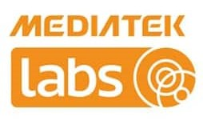
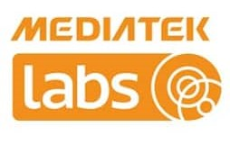

I am currently employed at Cruise LLC as a Senior Machine Learning Engineer II, where I focus on building ML Compilers to optimize machine learning models for General Motors' advanced driver assistance and full autonomous vehicle systems. Previously, I have worked at Advanced Micro Devices, Inc. as a Member of Technical Staff, Qualcomm AI Research as a Senior ML Engineer and Amazon Lab126 Hardware Compute Group as a SysDE ML Compiler Engineer. I graduated with two research focussed masters from University of Southern California in 2020 and an integrated dual degree from Indian Institute of Technology, Kharagpur in 2017. At present, I am finishing up my doctorate from University of Texas, Austin where my research focus is designing energy-efficient, robust, machine learning algorithms for generative AI edge applications.
Feel free to check out my socials and connect with me on them. I am always open to new opportunities and collaborations.
I have a pet cat, Oliver. He is quite chonky 😄 and a very good boy. Check out his

Build, enhance, and deploy the ML compiler pipeline for Autonomous Vehicle (AV) hardware accelerators enabling Full Self Driving (FSD).
Developing scalable, robust kernels for Generative AI models optimized for AMD's AI Engine Block.
Worked as part of AI Research bringing Generative AI to the edge.
Senior ML Engineer | Feb 2023 - Aug 2023Worked as part of AI Compiler Labs group on improving the Hexagon Tensor Processor.
Worked as part of Hardware Compute Group on the founding team for AZ1 Neural Edge Processor chip.
Optimized software stack to deploy models on the edge.
Worked on reducing training/inference computation complexity for RNN/LSTM running on accelerator architectures.
[HAL Group] Researched in Algorithm and Architecture co-design for Neural Networks Training on Accelerators.
[Project SHARP] Analyzed graph theory problems - PageRank, NxContingency, graph embedding and belief propagation, etc.
Teaching Assistant | Aug 2017 - Jul 2020Over the course of nine consecutive semesters, I instructed a total of nine classes at both the graduate and undergraduate levels.
While working for the Linux Performance Team, I designed an Android system app for testing and bench-marking systems.
Systems Engineering Intern | May 2015 - Jul 2015As a part of the Linux Kernel Team, I implemented a memory crawler app for Linux on python.
Simulated a Smart Traffic Grid on Sumo (coded in python).
I instructed three undergraduate courses offered by Electrical Engineering department in three consecutive semesters.
Research Assistant | Jul 2015 - Apr 2017[SEAL] As a research student working in the Secured Embedded Architecture Laboratory in the department of Computer Science, I investigated software acceleration of novel reversible watermarking algorithm, followed by an FPGA accelerator architecture design.
Currently pursuing a PhD in the department of Electrical & Computer Engineering under Dr. Sandeep Chinchali, with a research focus on energy-efficient, robust machine learning algorithms for generative AI edge applications.
M.S. in Computer Science fully funded by the Ming Hsieh Department of ECE graduate assistant-ship.
Master of Science | Jan 2018 - Apr 2020Research focussed M.S. in Electrical Engineering fully funded by the Ming Hsieh Department of ECE graduate assistant-ship. Completed PhD level coursework and published in top-tier conference.


 



0
GOOGLE SCHOLAR CITATIONS
0
STACK EXCHANGE OUTREACH
0
HONORS & AWARDS
2019 · Arnab Sanyal, Peter A. Beerel, and Keith M. Chugg · Published at IEEE ICASSP 2020 ·
The high computational complexity associated with training deep neural networks limits online and real-time training on edge devices. This paper proposed an end-to-end training and inference scheme that eliminates multiplications by approximate operations in the log-domain which has the potential to significantly reduce implementation complexity. We implement the entire training procedure in the log-domain, with fixed-point data representations. This training procedure is inspired by hardware-friendly approximations of log-domain addition which are based on look-up tables and bit-shifts. We show that our 16-bit log-based training can achieve classification accuracy within approximately 1% of the equivalent floating-point baselines for a number of commonly used datasets.
Index Terms: Logarithmic Number System, Deep Neural Networks, Approximate Computation
2026 · Arnab Sanyal, Gourav Datta, Prithwish Mukherjee, Sandeep P. Chinchali, Michael Orshansky · Published at IEEE ICASSP 2026 ·
Large Language Models (LLMs) achieve strong performance across tasks, but face storage and compute challenges on edge devices. We propose EntroLLM, a compression framework combining mixed quantization and entropy coding to reduce storage while preserving accuracy. We use a combination of unsigned and asymmetric quantization. Tensor-level quantization produces an entropy-reducing effect, increasing weight compressibility, and improving downstream Huffman encoding by 7× (8-bit) and 11.3× (4-bit) over state-of-the-art methods. Huffman coding further reduces memory bandwidth demands, while a parallel decoding strategy enables efficient weight retrieval with minimal latency. Experiments on edge-scale LLMs (smolLM-1.7B, phi3-mini-4k, mistral-7B) show up to 30% storage savings over uint8 and 65% over uint4 models, with 31.9–146.6% faster inference on memory-limited devices like the NVIDIA JETSON P3450. EntroLLM requires no retraining and is compatible with existing post-training quantization pipelines, making it practical for edge LLM deployment.
Index Terms: Large Language Models (LLMs), quantization, entropy coding, Huffman coding, parallel decoding